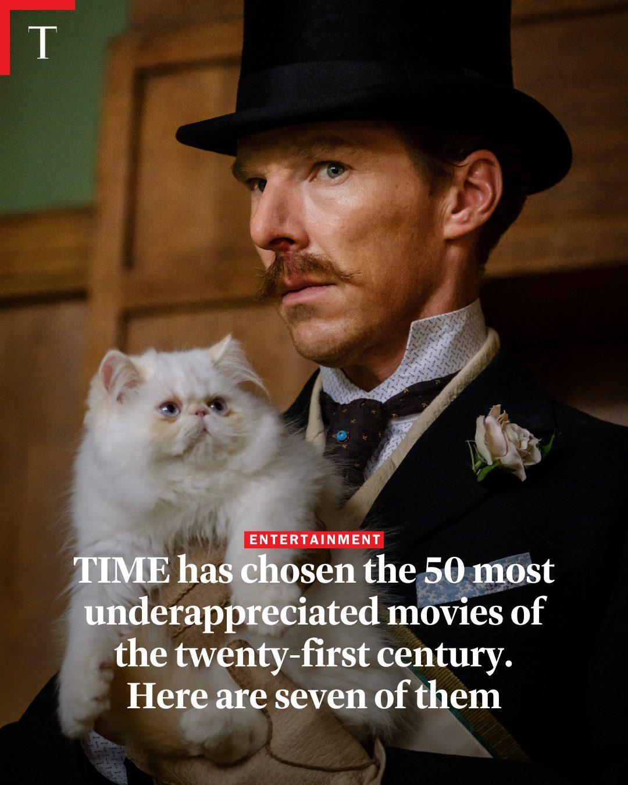
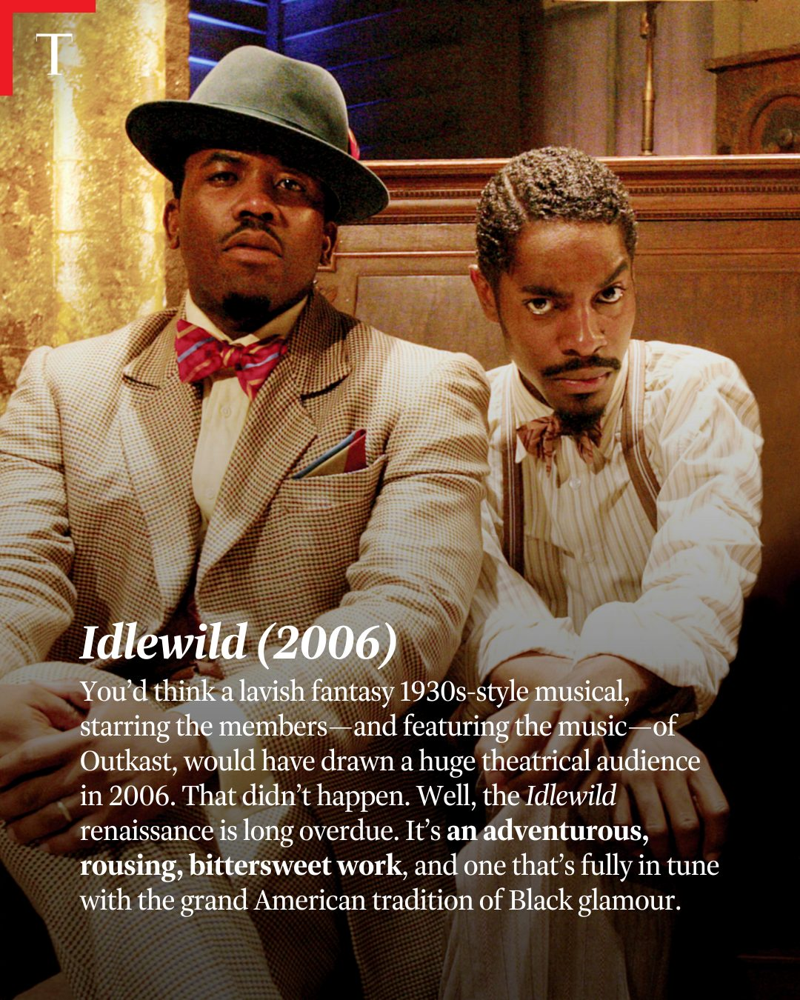
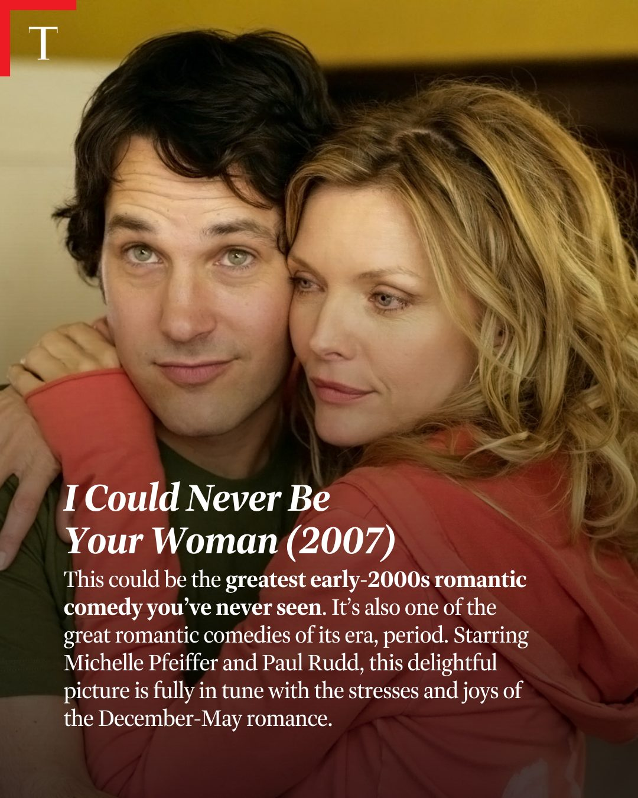
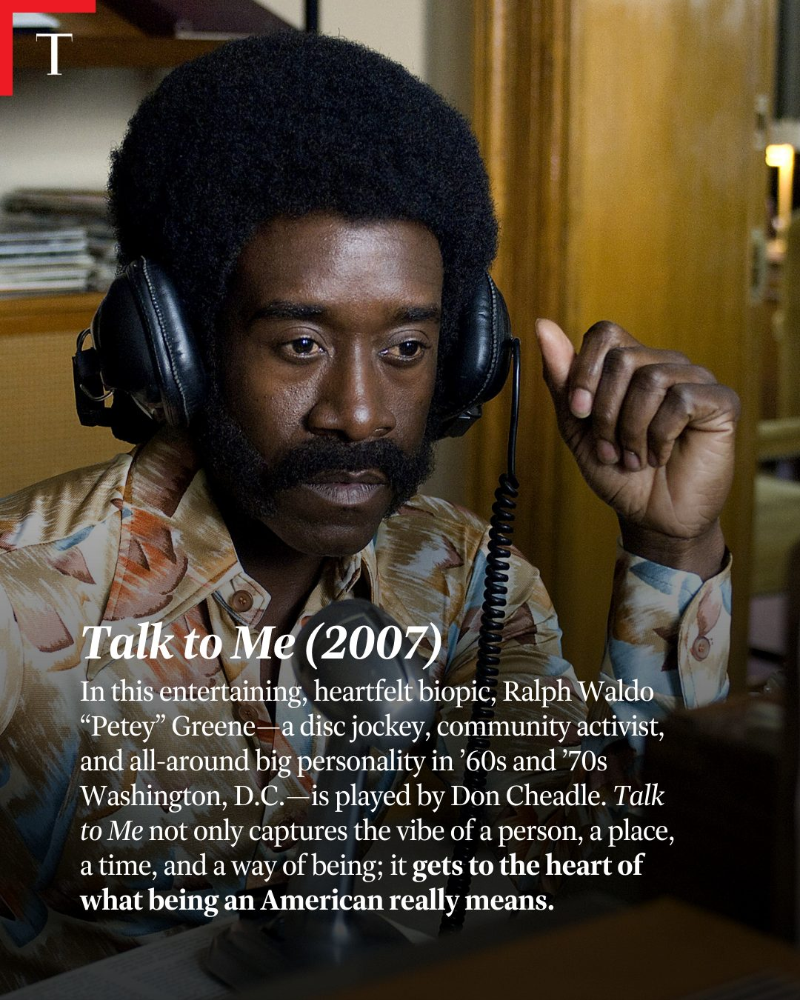
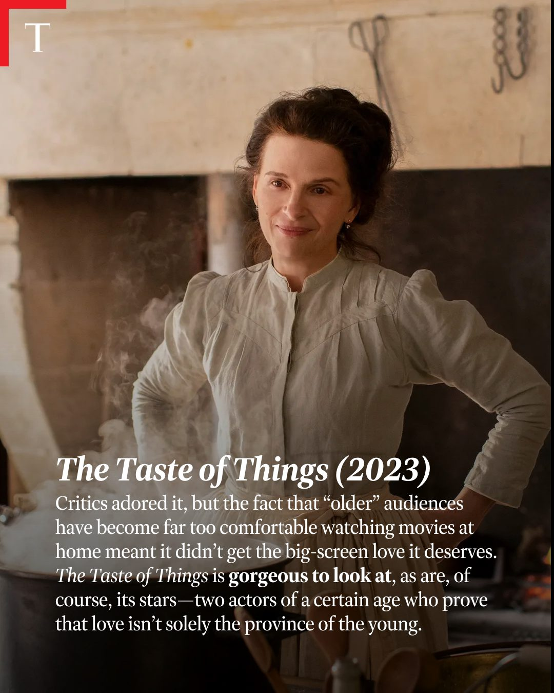
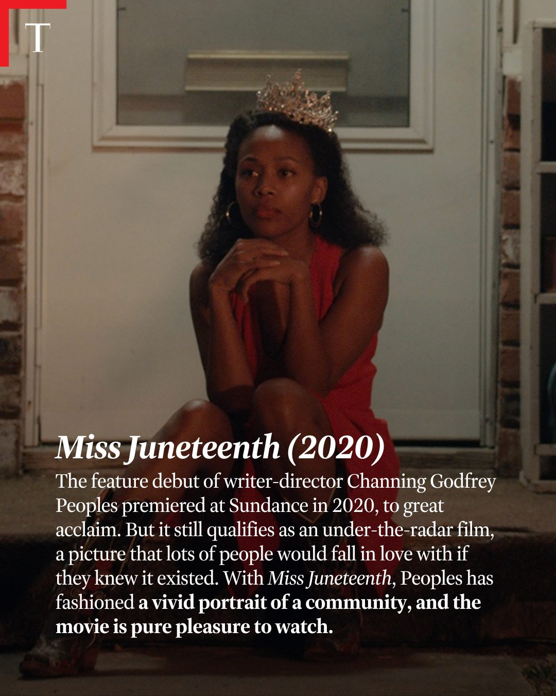
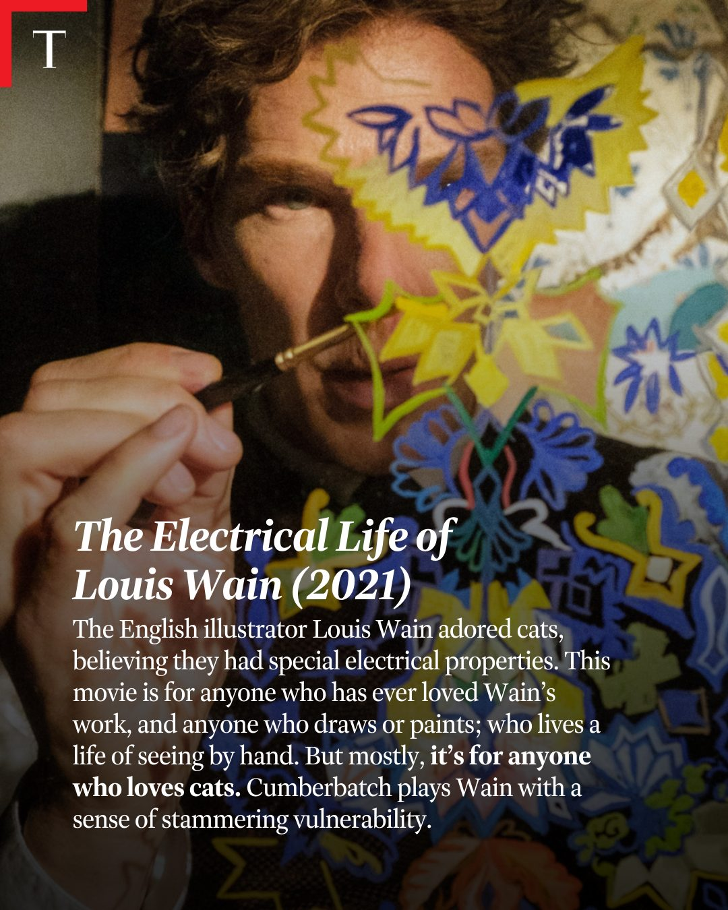
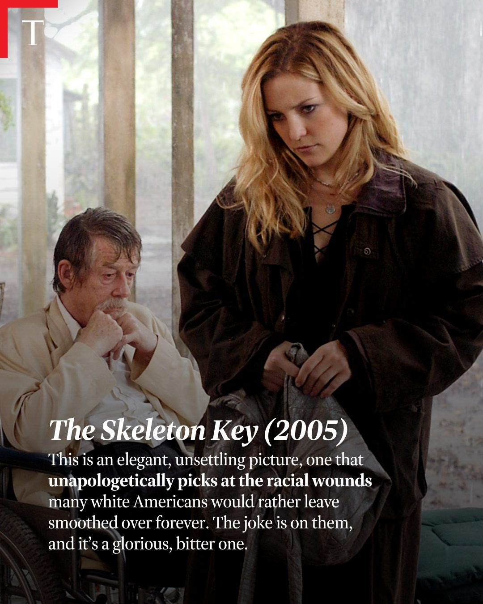

Instagram Post

T ENTERTAINMENT TIME has chosen the
carousel (9 slides) (enriched by ClaudeClaw)
Summary
T ENTERTAINMENT TIME has chosen the 50 most underapprecia... | T ENTERTAINMENT TIME has chosen the 50 most underapprecia... | T Idlewild (2006) You'd think a lavish fantasy 1930s-styl... | T I Could Never Be Your Woman (2007) This could be the gr... | T Talk to Me (2007) In this entertaining, heartfelt biopi... | T The Taste of Things (2023) Critics adored it, but the f... | T Miss Juneteenth (...
1
T ENTERTAINMENT TIME has chosen the 50 most underappreciated movies of the twenty-first century. Here are seven of them
A man with a mustache and top hat, wearing a suit, holds a fluffy white cat.
2
T ENTERTAINMENT TIME has chosen the 50 most underappreciated movies of the twenty-first century. Here are seven of them
A man with a mustache and a top hat, wearing a suit and tie, holds a fluffy white cat with blue eyes.
3
T Idlewild (2006) You'd think a lavish fantasy 1930s-style musical, starring the members — and featuring the music — of Outkast, would have drawn a huge theatrical audience in 2006. That didn't happen. Well, the Idlewild renaissance is long overdue. It's an adventurous, rousing, bittersweet work, and one that's fully in tune with the grand American tradition of Black glamour.
Two men, dressed in 1930s-style suits and bow ties, are seated side-by-side in an indoor setting with warm lighting.
4
T I Could Never Be Your Woman (2007) This could be the greatest early-2000s romantic comedy you've never seen. It's also one of the great romantic comedies of its era, period. Starring Michelle Pfeiffer and Paul Rudd, this delightful picture is fully in tune with the stresses and joys of the December-May romance.
The image shows a man and a woman, appearing to be Paul Rudd and Michelle Pfeiffer, in a close embrace, with the woman's head resting on the man's shoulder.
5
T Talk to Me (2007) In this entertaining, heartfelt biopic, Ralph Waldo “Petey” Greene—a disc jockey, community activist, and all-around big personality in ’60s and ’70s Washington, D.C.—is played by Don Cheadle. Talk to Me not only captures the vibe of a person, a place, a time, and a way of being; it gets to the heart of what being an American really means.
A man with an afro and mustache, wearing headphones and a patterned shirt, holds a coiled phone cord while looking down, with movie title and description text overlaid on the bottom half of the image.
6
T The Taste of Things (2023) Critics adored it, but the fact that “older” audiences have become far too comfortable watching movies at home meant it didn’t get the big-screen love it deserves. The Taste of Things is gorgeous to look at, as are, of course, its stars—two actors of a certain age who prove that love isn’t solely the province of the young.
A smiling woman with dark hair, wearing a light-colored, long-sleeved shirt, stands in an old-fashioned kitchen with a stone fireplace and steam rising from a pot.
7
T Miss Juneteenth (2020) The feature debut of writer-director Channing Godfrey Peoples premiered at Sundance in 2020, to great acclaim. But it still qualifies as an under-the-radar film, a picture that lots of people would fall in love with if they knew it existed. With Miss Juneteenth, Peoples has fashioned a vivid portrait of a community, and the movie is pure pleasure to watch.
A young Black woman wearing a crown and a red dress sits on steps outside a house, looking thoughtfully to the side with her hands clasped under her chin.
8
T The Electrical Life of Louis Wain (2021) The English illustrator Louis Wain adored cats, believing they had special electrical properties. This movie is for anyone who has ever loved Wain's work, and anyone who draws or paints; who lives a life of seeing by hand. But mostly, it's for anyone who loves cats. Cumberbatch plays Wain with a sense of stammering vulnerability.
A man with curly hair and a mustache, partially obscured by a colorful, abstract painting, holds a paintbrush to the canvas.
9
T The Skeleton Key (2005) This is an elegant, unsettling picture, one that unapologetically picks at the racial wounds many white Americans would rather leave smoothed over forever. The joke is on them, and it's a glorious, bitter one.
A man in a wheelchair and a woman with long blonde hair are depicted in a somber indoor setting, a scene from 'The Skeleton Key'.
All slides






